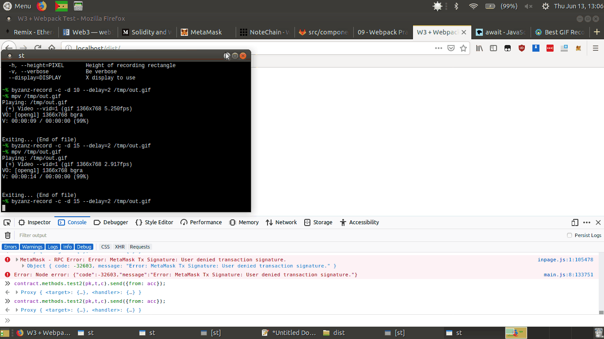

Feeling better about using Webpack, I’ve tried working with the NoteChain contract, adopting the deployment used in this tutorial
So far I’ve just been working with the Node interactive console (invoked via $ node)
In order to test the NoteChain contract, we need to authenticate our account via web3.eth.accounts, we can do this via:
web3.eth.accounts.privateKeyToAccount(privKey)
Which imports a single account from the private key (output when starting ganache-cli), the method returns an account object.
Then, when we want to send a txn to the blockchain, we can run
contract.methods.myFunc().send({from: myAccount}).then(…)
Frustratingly, when testing this, I recieved the following error:
Unfortunately, because Web3 v1.00 is still in beta, there isn’t a wide userbase, and this issue doesn’t seem to have been encountered much, I found the following results when searching on Google:
My next attempt might be to try Webpacking a test, and testing in the browser console with injected Web3 from MetaMask, although one of the SO comments seemed to indicate MetaMask still uses a pre-1.00 release of Web3.
I’ll also have a look over what the NoteChain frontend (used by notechain.github.io) does to create the contract.
After a fair amount of failure, I’ve looked into MetaMask’s documentation, and found that to authenticate an account via MM, we can use accounts = await ethereum.enable(), which await’s an asynchronous function, and return value (not the promise), can then be used to set a variable.
Frustratingly, this approach doesn’t work very well with Node, as webpack'ing a test only returned complaints about using await outside of an asynch function, so I think maybe a better approach would be to use Node + Webpack simply to export Web3 to the window scope, then use vanilla js to connect, etc.
Here’s a demo, writing some input to the blockchain:

I need to work out how to use emit statements in solidity to get the returned note id in the browser
Published: 2019-07-19